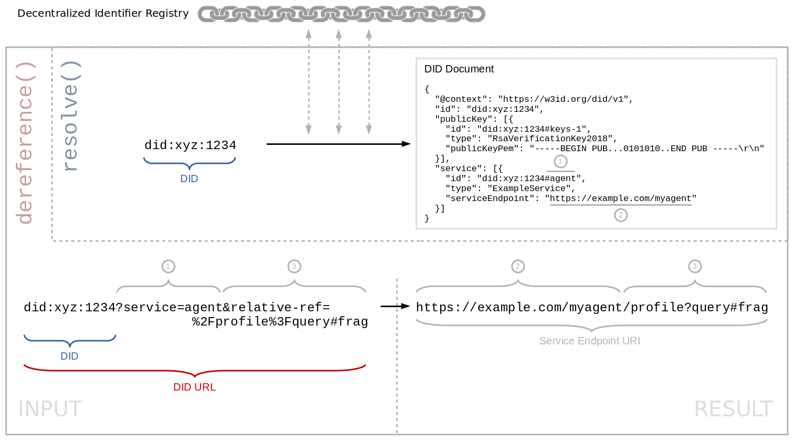
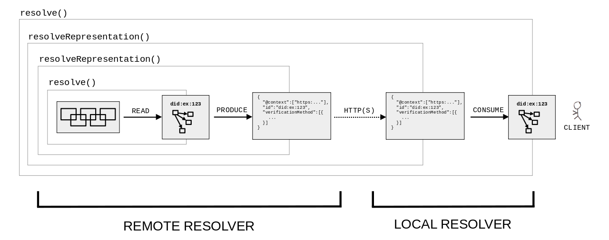

Decentralized identifiers (DIDs) are a new type of identifier for
verifiable, "self-sovereign" digital identity. DIDs are fully under the
control of the DID controller, independent from any centralized registry,
identity provider, or certificate authority. DIDs resolve to DID
Documents — simple documents that describe how to use that specific DID.
This document specifies the algorithms and guidelines for resolving DIDs
and dereferencing DID URLs.
Portions of the work on this specification have been funded by the
United States Department of Homeland Security's Science and Technology
Directorate under contracts HSHQDC-17-C-00019. The content of this
specification does not necessarily reflect the position or the policy of
the U.S. Government and no official endorsement should be inferred.
Work on this specification has also been supported by the Rebooting the
Web of Trust community facilitated by Christopher Allen, Shannon
Appelcline, Kiara Robles, Brian Weller, Betty Dhamers, Kaliya Young, Kim
Hamilton Duffy, Manu Sporny, Drummond Reed, Joe Andrieu, and Heather
Vescent.
Introduction
DID resolution is the process of obtaining a DID document for a given DID. This is one
of four required operations that can be performed on any DID ("Read"; the other ones being "Create", "Update",
and "Deactivate"). The details of these operations differ depending on the DID method.
Building on top of DID resolution, DID URL dereferencing is the process of retrieving a representation
of a resource for a given DID URL. Software and/or hardware that is able to execute these processes is called
a DID resolver.
This
specification defines common
requirements, algorithms including their inputs and results, architectural options, and various considerations for the
DID resolution and DID URL dereferencing processes.
Note that while this specification defines some base-level functionality for DID resolution, the actual steps
required to communicate with a DID's verifiable data registry are defined by the applicable
DID method specification.
The difference between "resolving" a DID and "dereferencing" a DID URL
is being thoroughly discussed by the community. For example, see
this comment.
A conforming DID resolver is any algorithm
realized as software and/or hardware that complies with the relevant normative
statements in .
A conforming DID URL dereferencer is any
algorithm realized as software and/or hardware that complies with the relevant
normative statements in .
The resolve function returns the DID document in its
abstract form (a map). The
resolveRepresentation function returns a byte stream of the DID
Document formatted in the corresponding representation.
The upper middle part of the diagram contains a rectangle with dashed grey outline, containing two
blue-outlined rectangles, one above the other.
The upper, larger rectangle is labeled, in blue, "Core Properties", and contains the following
INFRA notation:
The lower, smaller rectangle is labeled, in blue, "Core Representation-specific Entries (JSON-LD)", and
contains the following monospaced INFRA notation:
«[ "@context" → "https://www.w3.org/ns/did/v1" ]»
From the grey-outlined rectangle, three pairs of arrows extend to three
different black-outlined rectangles, aligned in a horizontal row side-by-side, in the bottom half
of the diagram. Each pair of arrows consists of
one blue arrow pointing from the grey-outlined rectangle to the respective
black-outlined rectangle, labeled "produce", and one red arrow pointing in the
reverse direction, labeled "consume". The first black-outlined rectangle in the row
is labeled "application/did+ld+json", and contains
the following JSON-LD data:
The third rectangle in the row is labeled "application/did+cbor", and contains hexadecimal data.
In the left part of the diagram, in the middle, there is a box, with black outline and light gray
background. This box is labeled "VERIFIABLE DATA REGISTRY" and contains a symbol representing a graph
with nodes and arcs. From this box, one arrow, labeled "resolve()", extends upwards and points to the
top half of the diagram where the grey-outlined rectangle is located. Another arrow, labeled
"resolveRepresentation()", extends downwards and points to the bottom half of the diagram, where the
row of three black-outlined rectangles is located.
Conforming DID resolver implementations do not alter the signature of
these functions in any way. DID resolver implementations might map the
resolve and resolveRepresentation functions to a
method-specific internal function to perform the actual DID resolution
process. DID resolver implementations might implement and expose
additional functions with different signatures in addition to the
resolve and resolveRepresentation functions specified
here.
The input variables
of the resolve and resolveRepresentation functions are
as follows:
did
This is the DID to resolve. This input is REQUIRED and the value MUST
be a conformant DID as defined in .
resolutionOptions
A metadata structure containing properties
defined in . This input is
REQUIRED, but the structure MAY be empty.
A metadata structure consisting of values
relating to the results of the DID resolution process which typically
changes between invocations of the resolve and
resolveRepresentation functions, as it represents data about the
resolution process itself. This structure is REQUIRED, and in the case of an
error in the resolution process, this MUST NOT be empty. This metadata is
defined by . If
resolveRepresentation was called, this structure MUST contain a
contentType property containing the Media Type of the
representation found in the didDocumentStream. If the resolution is
not successful, this structure MUST contain an error property
describing the error.
didDocument
If the resolution is successful, and if the resolve function was
called, this MUST be a DID document abstract data model (a map) as described in that
is capable of being transformed into a conforming DID Document
(representation), using the production rules specified by the representation.
The value of id in the resolved DID document MUST
match the DID that was resolved. If the resolution is unsuccessful, this
value MUST be empty.
didDocumentStream
If the resolution is successful, and if the resolveRepresentation
function was called, this MUST be a byte stream of the resolved DID
document in one of the conformant
representations. The byte stream might then be
parsed by the caller of the resolveRepresentation function into a
data model, which can in turn be validated and
processed. If the resolution is unsuccessful, this value MUST be an empty
stream.
didDocumentMetadata
If the resolution is successful, this MUST be a metadata structure. This structure contains
metadata about the DID document contained in the didDocument
property. This metadata typically does not change between invocations of the
resolve and resolveRepresentation functions unless the
DID document changes, as it represents metadata about the DID
document. If the resolution is unsuccessful, this output MUST be an empty metadata structure. Properties defined by this
specification are in .
DID Resolution Options
The possible properties within this structure and their possible values are
registered in the DID Specification Registries [[?DID-SPEC-REGISTRIES]]. This
specification defines the following common properties.
accept
The Media Type of the caller's preferred representation of the DID
document. The Media Type MUST be expressed as an ASCII string. The DID resolver implementation SHOULD use this
value to determine the representation contained in the returned
didDocumentStream if such a representation is supported and
available. This property is OPTIONAL for the resolveRepresentation
function and MUST NOT be used with the resolve function.
DID Resolution Metadata
The possible properties within this structure and their possible values are
registered in the DID Specification Registries [[?DID-SPEC-REGISTRIES]]. This
specification defines the following DID resolution metadata properties:
contentType
The Media Type of the returned didDocumentStream. This property is
REQUIRED if resolution is successful and if the
resolveRepresentation function was called.
This property MUST NOT
be present if the resolve function was called. The value of this
property MUST be an ASCII string that is the Media
Type of the conformant representations. The
caller of the resolveRepresentation function MUST use this value
when determining how to parse and process the didDocumentStream
returned by this function into the data model.
error
The error code from the resolution process. This property is REQUIRED when there
is an error in the resolution process. The value of this property MUST be a
single keyword ASCII string. The possible property
values of this field SHOULD be registered in the DID Specification Registries
[[?DID-SPEC-REGISTRIES]]. This specification defines the following
common error values:
invalidDid
The DID supplied to the DID resolution function does not conform
to valid syntax. (See .)
This error code is returned if the representation requested via the
accept input metadata property is not supported by the DID
method and/or DID resolver implementation.
DID Document Metadata
The possible properties within this structure and their possible values SHOULD
be registered in the DID Specification Registries [[?DID-SPEC-REGISTRIES]].
This specification defines the following common properties.
created
DID document metadata SHOULD include a created property to
indicate the timestamp of the Create operation.
The value of the property MUST be a string
formatted as an XML Datetime
normalized to UTC 00:00:00 and without sub-second decimal precision. For
example: 2020-12-20T19:17:47Z.
updated
DID document metadata SHOULD include an updated property to
indicate the timestamp of the last Update
operation for the document version which was resolved. The value of the
property MUST follow the same formatting rules as the created
property. The updated property is omitted if an Update operation
has never been performed on the DID document. If an updated
property exists, it can be the same value as the created property
when the difference between the two timestamps is less than one second.
deactivated
If a DID has been deactivated,
DID document metadata MUST include this property with the boolean value
true. If a DID has not been deactivated, this property is OPTIONAL,
but if included, MUST have the boolean value false.
nextUpdate
DID document metadata MAY include a nextUpdate property if
the resolved document version is not the latest version of the document. It
indicates the timestamp of the next Update
operation. The value of the property MUST follow the same formatting rules
as the created property.
versionId
DID document metadata SHOULD include a versionId property to
indicate the version of the last Update
operation for the document version which was resolved. The value of the
property MUST be an ASCII string.
nextVersionId
DID document metadata MAY include a nextVersionId property
if the resolved document version is not the latest version of the document. It
indicates the version of the next Update
operation. The value of the property MUST be an ASCII string.
equivalentId
A DID method can define different forms of a DID that are
logically equivalent. An example is when a DID takes one form prior to
registration in a verifiable data registry and another form after such
registration. In this case, the DID method specification might need to
express one or more DIDs that are logically equivalent to the resolved
DID as a property of the DID document. This is the purpose of the
equivalentId property.
DID document metadata MAY include an equivalentId property.
If present, the value MUST be a set where each item is a
string that conforms to the rules in Section . The relationship is a statement that each
equivalentId value is logically equivalent to the
id property value and thus refers to the same DID subject.
Each equivalentId DID value MUST be produced by, and a form
of, the same DID method as the id property value. (e.g.,
did:example:abc == did:example:ABC)
A conforming DID method specification MUST guarantee that each
equivalentId value is logically equivalent to the
id property value.
A requesting party is expected to retain the values from the id and
equivalentId properties to ensure any subsequent
interactions with any of the values they contain are correctly handled as
logically equivalent (e.g., retain all variants in a database so an interaction
with any one maps to the same underlying account).
If a requesting party does not retain the values from the id and
equivalentId properties and ensure any subsequent
interactions with any of the values they contain are correctly handled as
logically equivalent, there might be negative or unexpected issues that
arise. Implementers are strongly advised to observe the
directives related to this metadata property.
canonicalId
The canonicalId property is identical to the
equivalentId property except: a) it is associated with a
single value rather than a set, and b) the DID is defined to be
the canonical ID for the DID subject within the scope of the containing
DID document.
DID document metadata MAY include a canonicalId property.
If present, the value MUST be a string that conforms to the rules in Section . The relationship is a statement that the
canonicalId value is logically equivalent to the
id property value and that the canonicalId
value is defined by the DID method to be the canonical ID for the DID
subject in the scope of the containing DID document. A
canonicalId value MUST be produced by, and a form of, the
same DID method as the id property value. (e.g.,
did:example:abc == did:example:ABC).
A conforming DID method specification MUST guarantee that the
canonicalId value is logically equivalent to the
id property value.
A requesting party is expected to use the canonicalId value
as its primary ID value for the DID subject and treat all other
equivalent values as secondary aliases (e.g., update corresponding primary
references in their systems to reflect the new canonical ID directive).
If a resolving party does not use the canonicalId value as
its primary ID value for the DID subject and treat all other equivalent values
as secondary aliases, there might be negative or unexpected issues that arise
related to user experience. Implementers are strongly advised to observe the
directives related to this metadata property.
Determine whether the DID method of the input DID is supported by the DID resolver
that implements this algorithm. If not, the DID resolver MUST return the following result:
There is discussion how a DID that has been
deactivated should be treated during the DID resolution
process.
Specify how signatures/proofs on a DID document should be verified during the
DID resolution process.
Should we define functionality that enables discovery of the list of DID methods or other
capabilities that are supported by a DID resolver? Or is this implementation-specific and out-of-scope
for this spec? For example, see here and
here.
DID URL Dereferencing
The DID URL dereferencing function dereferences a DID URL into a
resource with contents depending on the DID URL's components,
including the DID method, method-specific identifier, path, query, and
fragment. This process depends on DID resolution of the DID
contained in the DID URL. DID URL dereferencing might involve
multiple steps (e.g., when the DID URL being dereferenced includes a fragment),
and the function is defined to return the final resource after all steps are
completed. The following figure depicts the relationship described
above.
The top left part of the diagram contains a rectangle with black outline, labeled "DID".
The bottom left part of the diagram contains a rectangle with black outline, labeled "DID URL".
This rectangle contains four smaller black-outlined rectangles, aligned in a horizontal row adjacent to
each other. These smaller rectangles are labeled, in order, "DID", "path", "query", and "fragment.
The top right part of the diagram contains a rectangle with black outline, labeled "DID document".
This rectangle contains three smaller black-outlined rectangles. These smaller rectangles are
labeled "id", "(property X)", and "(property Y)", and are surrounded by multiple series of three
dots (ellipses). A curved black arrow, labeled "DID document - relative fragment dereference", extends
from the rectangle labeled "(property X)", and points to the rectangle labeled "(property Y)".
The bottom right part of the diagram contains an oval shape with black outline, labeled "Resource".
A black arrow, labeled "resolves to a DID document", extends from the rectangle in the top left part of
the diagram, labeled "DID", and points to the rectangle in the top right part of diagram, labeled
"DID document".
A black arrow, labeled "refers to", extends from the rectangle in the top right part of the diagram,
labeled "DID document", and points to the oval shape in the bottom right part of diagram, labeled
"Resource".
A black arrow, labeled "contains", extends from the small rectangle labeled "DID" inside the
rectangle in the bottom left part of the diagram, labeled "DID URL", and points to the rectangle
in the top left part of diagram, labeled "DID".
A black arrow, labeled "dereferences to a DID document", extends from the rectangle in the bottom left
part of the diagram, labeled "DID URL", and points to the rectangle in the top right part of diagram,
labeled "DID document".
A black arrow, labeled "dereferences to a resource", extends from the rectangle in the bottom left
part of the diagram, labeled "DID URL", and points to the oval shape in the bottom right part of diagram,
labeled "Resource".
All conforming DID resolvers implement
the following function which has the following abstract form:
While it is valid for any didUrl to be passed to a DID URL
dereferencer, implementers are expected to refer to to
further understand common patterns for how a DID URL is expected
to be dereferenced.
dereferencingOptions
A metadata structure consisting of input
options to the dereference function in addition to the
didUrl itself. Properties defined by this specification are in . This input is REQUIRED, but the
structure MAY be empty.
This function returns multiple values, and no limitations
are placed on how these values are returned together.
The return values of the dereference include
dereferencingMetadata, contentStream,
and contentMetadata:
dereferencingMetadata
A metadata structure consisting of values
relating to the results of the DID URL dereferencing process. This
structure is REQUIRED, and in the case of an error in the dereferencing process,
this MUST NOT be empty. Properties defined by this specification are in . If the dereferencing is not
successful, this structure MUST contain an error property
describing the error.
contentStream
If the dereferencing function was called and successful, this MUST
contain a resource corresponding to the DID URL. The
contentStream MAY be a resource such as a DID
document that is serializable in one of the conformant
representations, a verification
method, a service, or any other resource format that
can be identified via a Media Type and obtained through the resolution process.
If the dereferencing is unsuccessful, this value MUST be empty.
contentMetadata
If the dereferencing is successful, this MUST be a
metadata structure, but the structure MAY be empty. This structure contains
metadata about the contentStream. If the contentStream
is a DID document, this MUST be a didDocumentMetadata structure as
described in DID Resolution. If the dereferencing is unsuccessful, this
output MUST be an empty metadata structure.
Conforming DID URL dereferencing implementations do not alter the
signature of these functions in any way. DID URL dereferencing
implementations might map the dereference function to a
method-specific internal function to perform the actual DID URL
dereferencing process. DID URL dereferencing implementations might
implement and expose additional functions with different signatures in addition
to the dereference function specified here.
DID URL Dereferencing Options
The possible properties within this structure and their possible values SHOULD
be registered in the DID Specification Registries [[?DID-SPEC-REGISTRIES]].
This specification defines the following common properties for
dereferencing options:
accept
The Media Type that the caller prefers for contentStream. The Media
Type MUST be expressed as an ASCII string. The
DID URL dereferencing implementation SHOULD use this value to determine
the contentType of the representation contained in the
returned value if such a representation is supported and available.
DID URL Dereferencing Metadata
The possible properties within this structure and their possible values are
registered in the DID Specification Registries [[?DID-SPEC-REGISTRIES]]. This
specification defines the following common properties.
contentType
The Media Type of the returned contentStream SHOULD be expressed
using this property if dereferencing is successful. The Media
Type value MUST be expressed as an ASCII string.
error
The error code from the dereferencing process. This property is REQUIRED when
there is an error in the dereferencing process. The value of this property
MUST be a single keyword expressed as an ASCII
string. The possible property values of this field SHOULD be registered in
the DID Specification Registries [[?DID-SPEC-REGISTRIES]]. This specification
defines the following common error values:
The DID URL dereferencer was unable to find the
contentStream resulting from this dereferencing request.
Algorithm
The following DID URL dereferencing algorithm MUST be implemented by a conformant DID resolver.
In accordance with [[RFC3986]], it consists of the following steps: Resolving the DID, dereferencing the primary
resource, and dereferencing the secondary resource (only if the input DID URL contains a DID fragment:
Obtain the DID document for the input DID by executing the
DID resolution algorithm as defined in . All
DID parameters of the input DID URL MUST be passed as resolution options to the DID
Resolution algorithm. If the input DID does not exist, return a null result.
Otherwise, the result is called the resolved DID document.
If present, separate the DID fragment from the input DID URL. Execute the algorithm for
, with the input DID URL adjusted
accordingly.
If the original input DID URL contained a DID fragment, execute the algorithm for
.
Dereferencing the Primary Resource
If the input DID URL contains the
DID parameterservice and optionally the relativeRef DID parameter:
From the resolved DID document, select the
service endpoint whose id
property contains a fragment which matches the value of the service DID parameter of the
input DID URL. This is called the input service endpoint.
There have been discussions whether in addition to the DID parameter service,
there could also be a DID parameter serviceType to select services based
on their type rather than ID.
See
comments by Dave Longley about `serviceType`.
The applicable DID method MAY specify how to dereference
the input DID URL.
The client MAY be able to dereference the input DID URL
in an application-specific way.
If neither this algorithm, nor the applicable DID method, nor the client
is able to dereference the input DID URL, return the following result:
dereferencingMetadata: «[ "error" → "notFound" ]»
contentStream: null
contentMetadata: «[ ]»
Dereferencing the Secondary Resource
If the input DID URL contains a DID fragment,
then dereferencing of the secondary resource identified by the URL is dependent not on the URI scheme, but
on the media type ([[RFC2046]]) of the primary resource, i.e., on the result of
.
If the result of is a resolved DID document
with media type application/did+ld+json, and the input DID URL contains a
DID fragment:
did:example:1234#keys-1
From the resolved DID document, select the JSON-LD object whose id
property matches the input DID URL, e.g., a public key or service endpoint in the
DID document. This is called the output resource.
When selecting the JSON-LD object from the DID document, the absolute
DID URL used to identify a graph node MUST be unique and present only once in the
DID document. If the identifier of the graph node is not unique,
including if a relative or base IRI mapped to an absolute IRI collides with
a different graph node's absolute IRI, then an error MUST be thrown.
Return the output resource.
Mention relative IRIs and that the DID itself is considered the base IRI for
the JSON-LD parser. Mention potential attack vector if @base is injected into the
DID document.
Also see this discussion
on fully qualified DID URLs as the value of the id field.
This use of the DID fragment is consistent with the definition of the fragment identifier in
[[RFC3986]]. It identifies a secondary resource which is a subset of the primary resource
(the DID document).
This use of the DID fragment is furthermore consistent with the concept of Hash URIs
for the Semantic Web [[COOL-URIS]].
Perhaps we can find a good reference somewhere from RDF, JSON-LD or Solid specifications that defines
clearly the ability to use the fragment for identifying a specific resource in an RDF document.
This behavior of the DID fragment is analogous to the handling of a fragment in an HTTP URL in the
case when dereferencing it returns an HTTP 3xx (Redirection) response with a
Location header (see section 7.1.2 of [[RFC7231]].
Otherwise, dereference the secondary resource as defined by the media type ([[RFC2046]]) of the primary resource.

Dereferencing a DID URL to a service endpoint URL.
Change the diagram and/or examples to make them consistent.
Metadata Structure
Input and output metadata is often involved during the DID Resolution,
DID URL dereferencing, and other DID-related processes. The structure
used to communicate this metadata MUST be a map
of properties. Each property name MUST be a string. Each property value MUST be a string, map, list, set,
boolean, or
null. The values within any complex data
structures such as maps and lists MUST be one of these data types as well.
All metadata property definitions registered in the DID Specification
Registries [[?DID-SPEC-REGISTRIES]] MUST define the value type, including any
additional formats or restrictions to that value (for example, a string
formatted as a date or as a decimal integer). It is RECOMMENDED that property
definitions use strings for values. The entire metadata structure MUST be
serializable according to the JSON
serialization rules in the [[INFRA]] specification. Implementations MAY
serialize the metadata structure to other data formats.
All implementations of functions that use metadata structures as either input or
output are able to fully represent all data types described here in a
deterministic fashion. As inputs and outputs using metadata structures are
defined in terms of data types and not their serialization, the method for
representation is internal to the implementation of the function and is
out of scope of this specification.
The following example demonstrates a JSON-encoded metadata structure that
might be used as DID
resolution input metadata.
{
"accept": "application/did+ld+json"
}
This example corresponds to a metadata structure of the following format:
«[
"accept" → "application/did+ld+json"
]»
The next example demonstrates a JSON-encoded metadata structure that might be
used as DID resolution
metadata if a DID was not found.
{
"error": "notFound"
}
This example corresponds to a metadata structure of the following format:
«[
"error" → "notFound"
]»
The next example demonstrates a JSON-encoded metadata structure that might be
used as DID document metadata
to describe timestamps associated with the DID document.
TODO: Describe how DID resolvers are implemented and used, describe the relevance
of DID methods.
Explain the difference between "method architectures" and "resolver architectures".
... interaction with a remote network is required during execution of the "Read" operation.
... an actual DID document is stored in plain-text on a verifiable data registry,
or that the DID document can simply be retrieved via a standard protocol such as HTTP(S).
While some DID methods may define their "Read" operation this way, others may
define more complex multi-step processes that involve on-the-fly construction of a "virtual" DID document.
As an example, mention what it means to "resolve" peer/off-ledger/microledger/edgechain DIDs (for instance, see
[[DID-PEER]] and
here).
As an example, mention what it means to "resolve" DIDs that are simply wrapped public keys (for instance, see
[[DID-KEY]] and
here).
A verifiable read maximizes confidence in the integrity and correctness of the result of the "Read" operation ‐ to the extent
possible under the applicable DID method. It can be implemented in a variety of ways, for example:
A "Read" operation may be considered "Verifiable" if access to the verifiable data registry is
possible via a local, trusted network host. In the case of blockchain-based DID methods, a blockchain full node
may be run on a local network host in order to implement a verifiable read.
The DID resolver may be remotely connected to the verifiable data registry but have some method
to verify the contents of the response of the "Read" operation. In the case of blockchain-based DID methods, even if
direct access to a blockchain full node is not available, a verifiable read may still be possible by running a light client that
processes metadata to verify that the result of the "Read" operation hasn't been tampered with.
A verifiable read may be implemented if access to the verifiable data registry happens via a remote
network host that is considered trusted because it is run on a personal device in the home and accessed via
a secure channel.
An unverifiable read does not have such guarantees and is therefore less desirable, for example:
A "Read" operation may be considered "Unverifiable" if access to the verifiable data registry happens
via a remote, untrusted intermediary. In the case of blockchain-based DID methods, a remote blockchain explorer API
operated by an third party may be used to look up data from the blockchain.
Whether or not a verifiable read is possible depends not only on a DID method itself, but also on the way how
a DID resolver implements it. DID methods MAY define multiple different ways of implementing their "Read"
operation(s) and SHOULD offer guidance on how to implement a verifiable read in at least one way.
The guarantees associated with a verifiable read are still always limited by the architectures, protocols, cryptography,
and other aspects of the underlying verifiable data registry. The strongest forms of verifiable read
implementations are considered those that do not require any interaction with a remote network at all (for example, see
[[DID-KEY]]), or that minimize dependencies on specific network infrastructure and reduce the "root of trust"
to proven entropy and cryptography alone (for example, see [[KERI]]).
TODO: Describe how a client can potentially verify the result of a "Read" operation independently even if it does
not trust the DID resolver (e.g., using state proofs).
TODO: Discuss DID resolution in constrained user agents such as mobile apps and browsers.
The following diagram shows how the resolve() and resolveRepresentation() functions
use production and consumption rules of DID document representation can apply in an architecture that involves
both a local resolver and a remote resolver.

Production and consumption in an architecture that involves both
a local and a remote DID resolver.
This is similar to a "stub resolver" invoking a "recursive resolver" in DNS architecture, although
the concepts are not entirely comparable (DNS Resolution uses a single concrete protocol, whereas DID resolution
is an abstract function realized by different DID methods and different bindings).
This is a metadata structure (see section Metadata Structure
in [[DID-CORE]]) that contains metadata about a DID Document.
This metadata typically does not change between invocations of the DID Resolution function unless the DID document changes, as it represents data about the DID document.
For certain data, it may be debatable whether it should be part of the DID document
(i.e., data that describes the DID Subject), or whether it is metadata (i.e., data about the DID document or about
the DID resolution process). For example the URL of the "Continuation DID document" in the BTCR method.
This metadata typically changes between invocations of the DID URL Dereferencing functions as it represents data about the dereferencing process itself.
Add more details how DID URL dereferencing metadata works.
This is a metadata structure (see section Metadata Structure
in [[DID-CORE]]) that contains metadata about the content.
This metadata typically does not change between invocations of the DID URL Dereferencing function unless the content changes, as it represents data about the content.
Add more details how content metadata works.
Errors
invalidDid
If an invalid DID is detected during DID Resolution,
the value of the DID Resolution Metadata error property MUST be invalidDid
as defined in section DID Resolution Metadata in [[DID-CORE]].
If a DID document representation is not supported during DID Resolution or DID URL dereferencing,
the value of the DID Resolution Metadata error property MUST be representationNotSupported as
defined in section DID Resolution Metadata in [[DID-CORE]].
methodNotSupported
If a DID method is not supported during DID Resolution or DID URL dereferencing,
the value of the DID Resolution or DID URL Dereferencing Metadata error property MUST be methodNotSupported.
internalError
When an unexpected error occurs during DID Resolution or DID URL dereferencing,
the value of the DID Resolution or DID URL Dereferencing Metadata error property MUST be internalError.
invalidPublicKey
If an invalid public key value is detected during DID Resolution or DID URL dereferencing,
the value of the DID Resolution or DID URL Dereferencing Metadata error property MUST be invalidPublicKey.
invalidPublicKeyLength
If the byte length of rawPublicKeyBytes does not match the expected public key length for the associated multicodecValue during DID Resolution or DID URL dereferencing,
the value of the DID Resolution or DID URL Dereferencing Metadata error property MUST be invalidPublicKeyLength.
invalidPublicKeyType
If an invalid public key type is detected during DID Resolution or DID URL dereferencing,
the value of the DID Resolution or DID URL Dereferencing Metadata error property MUST be invalidPublicKeyType.
unsupportedPublicKeyType
If an unsupported public key type is detected during DID Resolution or DID URL dereferencing,
the value of the DID Resolution or DID URL Dereferencing Metadata error property MUST be unsupportedPublicKeyType.
Bindings
This section defines bindings for the abstract algorithms in sections and
.
If the output of the DID URL dereferencing function contains the dereferencingMetadata property error,
then the HTTP response status code MUST be set to the value that corresponds to the value of the error property,
according to the following table:
error
HTTP status code
invalidDid
400
invalidDidUrl
400
notFound
404
representationNotSupported
406
methodNotSupported
501
internalError
500
(any other value)
500
If the output of the DID URL dereferencing function contains the didDocumentMetadata property deactivated with value true:
If the value of the Accept HTTP header is absent or `application/did+ld+json` (or other media type of a conformant representation of a DID document):
The HTTP response status code MUST be 200.
The HTTP response MUST contain a Content-Type header. The
value of this header MUST be `application/did+ld+json` (or other media type of a conformant representation of a DID document).
The HTTP response body MUST contain the didDocumentStream, in the representation corresponding to the Accept HTTP header.
If the value of the Accept HTTP header is `application/ld+json;profile="https://w3id.org/did-resolution"`:
Produce a DID resolution result (see (see ) and populate it with the didDocumentStream,
didResolutionMetadata, and didDocumentMetadata that are the output of the
DID resolution function.
The HTTP response status code MUST be 200.
The HTTP response MUST contain a Content-Type header. The
value of this header MUST be `application/ld+json;profile="https://w3id.org/did-resolution"`.
How should Accept and Content-Type HTTP headers be used? How are
the resolve() and resolveRepresentation() functions called? See
this issue for a discussion.
Are two separate HTTP(S) endpoints required/allowed for the resolve() and
dereference() functions, or can/must a single HTTP(S) endpoint be used?
DID Resolution Examples
Given the following DID resolver HTTP(S) endpoint:
We could potentially allow query components on both the
input DID URL and input service endpoint URL, if they both contain lists of
key/value parameters that can be merged.
Details of the Service Endpoint Construction algorithm have been discussed in April 2019
on the CCG mailing list, e.g., here
or here.
Instead of defining our own algorithm, we could potentially re-use the "Relative Resolution"
algorithm defined in [[RFC3986]].
DID resolution and DID URL dereferencing do not involve any authentication or authorization
functionality. Similar to DNS resolution, anybody can perform the process, without requiring any credentials
or non-public knowledge.
Explain that DIDs are not necessarily globally resolvable, such as pairwise or N-wise
"peer" DIDs.
See [[RFC3339]]:
URIs have a global scope and are interpreted consistently regardless of context, though the
result of that interpretation may be in relation to the end-user's context.
An advanced idea is that the result of DID resolution could be contextual or depend on policies,
see this comment.
A related topic is whether (parts of) DID document could be encrypted, e.g.,
w3c/did-core/issues/25. Also see the use
of the fragment in the IPID DID method.
Caching behavior can be controlled by configuration of the DID resolver,
by the noCache resolution option, or by contents of the DID document
(e.g., a `cacheMaxTtl` field), or by a combination of these properties.
See corresponding open issue.
Perhaps we can re-use caching mechanisms of other protocols such as HTTP.
The use of the versionId DID parameter is specific to the DID method.
Its possible values may include sequential numbers, random UUIDs, content hashes, etc..
DID document metadata MAY contain a versionId
property that changes with each Update operation that is performed
on a DID document.
There is discussion on the relationship between DID resolution and
resolution of non-DID identifiers such as domain names, HTTP URIs, or e-mail addresses. This includes the
questions how DIDs can be discovered from non-DID identifiers, and how links between identifiers can
be verifiable.
DID Method Governance
Describe which methods a DID resolver should support, and potential implications.
Future Work
This section lists additional DID URL dereferencing features that are under discussion and
have not yet been incorporated into the algorithm.
Redirect
A service endpoint may have
a serviceEndpoint property with a value that is itself
a DID. This is interpreted as a "DID redirect" from the input DID to another. In this case, a "child"
DID resolution process can be launched to get to a "final" service endpoint.
The follow-redirect resolution option can be supplied by a client as a hint to
instruct whether redirects should be followed. This resolution option is OPTIONAL.
See corresponding open issue.
DID redirects could not only apply to a single service endpoint, but
to an entire DID document, therefore enabling portability use cases.